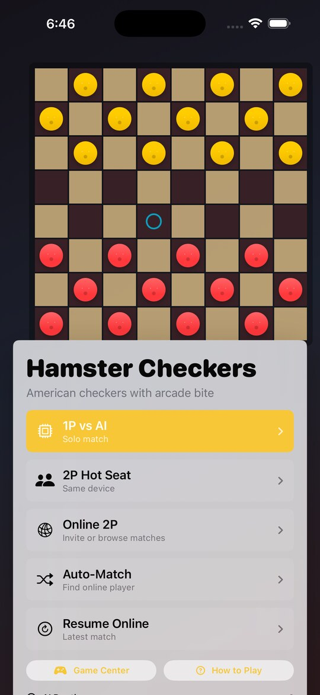
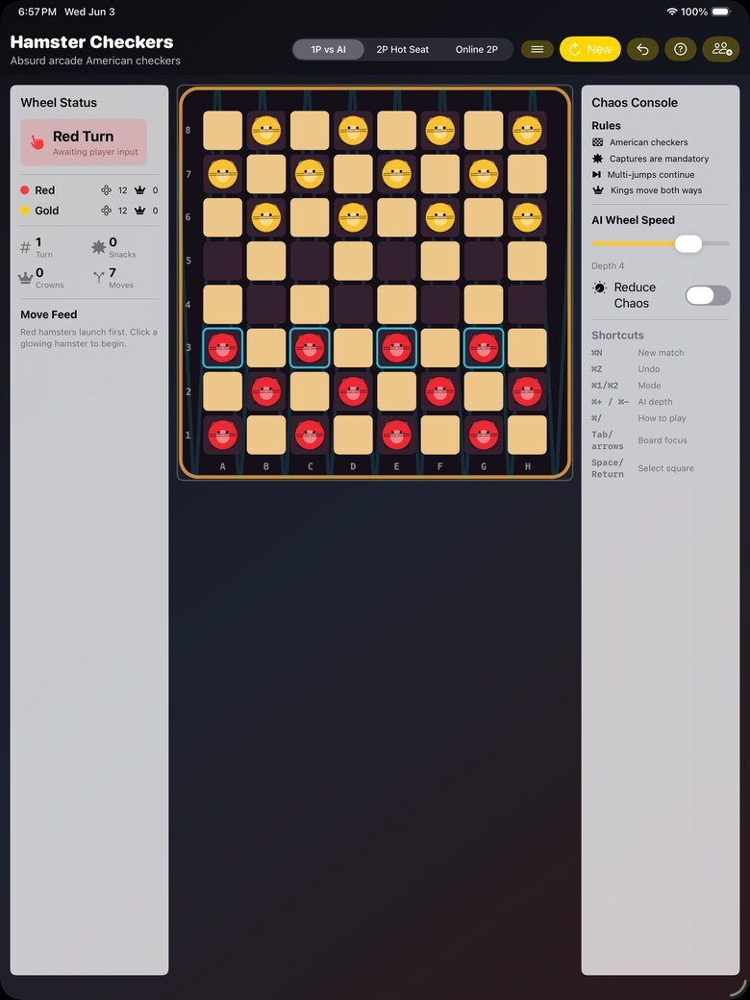

1P vs AI
Start a quick solo match, tune the AI depth, undo local moves, and practice capture chains without needing a network.
iPhone, iPad, and Mac
Classic American checkers with arcade bite. Play solo against AI, pass the board in hot-seat mode, or start Game Center turn-based Online 2P matches.
Real Rules
Hamster Checkers keeps the familiar strategy intact: mandatory captures, multi-jumps, kings, no-move wins, legal move highlights, and a move feed that makes every turn easy to follow.
Ways To Play
Start a quick solo match, tune the AI depth, undo local moves, and practice capture chains without needing a network.
Share one iPhone, iPad, or Mac for same-device two-player matches with clear turn status and board highlights.
Use Game Center turn-based play to invite friends, Auto-Match, refresh active matches, and resume when it is your turn.
Responsive Board


Game Center
Start a match, make your move, close the app, and come back later. Active matches can be refreshed, opened, and resumed from the game menu.